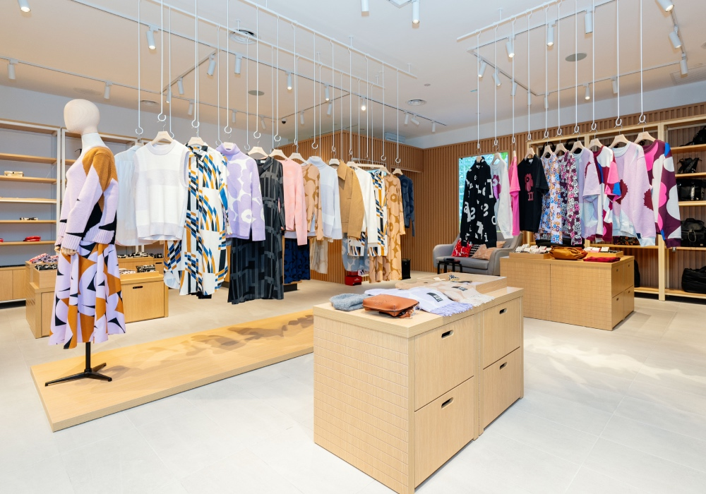

Health Insurance Cross Sell
Our project is a Learn to Rank initiative that leverages Machine Learning Algorithms for Classification.
The primary goal is to determine the likelihood of each customer in our database to purchase a product.
To address this challenge, we have created an accessible API that seamlessly integrates with Google Sheets.
This user-friendly solution empowers our company to optimize resource allocation and make informed decisions,
ultimately enhancing our overall efficiency and effectiveness
Main Tools
Python
Pandas
Univariate, Bivariate, Multivariate Analysis
Optuna
KNN
XGBoost
Google Sheet
Logistic Regression
Flask
VSCode and Jupyter Notebook
Machine Learning performance metrics:Confusion Matrix, Precision, Recall, Gain Lift Chart,
Rossmann Sales Predictions
This is a Data Science Time Series Regression project developed to Rossmann Stores, where they held more than 4000 sotres and the aim of this project was to develop a
solution that predicts how much each store will sell over the next six weeks. To solve this business problem were followed the CRISP-DS metodology and some machine
learning algorithms for regression problems were trained.The solution was deployed and were developed a Telegram Bot that return the prediction induvidually to each store.
Main Tools
Mind Map Hypothesis.
Univariate, Bivariate, Multivariate Analysis
Boruta
Linear Regression
Linear Regression Regularized - Lasso
Randon Forest Regressor
XGBoost Regressor
Flask
Python
VSCode and Jupyter Notebook
Teleragm BOT
Machine Learning performance metrics: RMSE, MAE, MAPE and MPE
Machine Learning ALgorithms: SKlearn and Scipy
Star Jeans: A Web Scraping Project
A Software Engineering project, that consists in collect, clear and store the information, available in any website, into a database, making easy to analyse as a second step.
To know about the business problem, and the story behind this project, please, click at the butto bellow.
Main Tools
Python, Pandas
VSCode and Jupyter Notebook
SQLite3
Beautifoul Soup, Regex, SQL
Cronjob
House Rocket Insights
This is a Insight Projects where the objective was the properties recomendadion, where, using Data Science tools by doing a exploratory data analysis, was possible to
identify which houses to buy, how much pay for them, when the company should ressel them. The final solution is an interactive dashboard. Check this project out by clickin at the butto bellow.
Main Tools
Python, Pandas, Numpy, Seaborn.
Anaconda, VSCode and Jupyter Notebook.
Plotly and Folium.
Heroku Cloud.
Streamlit Python framework web.

In Style Net Promoter Score
Imagine you own a store and have the ability to identify potentially dissatisfied customers. With this insight, you can take action to improve their satisfaction. This is the aim of this project,
where I have developed a solution using machine learning techniques that, based on certain characteristics, can identify potentially dissatisfied customers. This enables the company to address and reverse
this situation. Explore this project by clickin the button below.
Main Tools
Python
Jupyter Notebook
Pandas
Statistics
Machine Learning for Classification
Machine Learning Fundamentals
This is a final project of the Machine Learning Fundamentals discipline, where the objective is to have a better understanding about how the algorithms works and
performs due to algorithm's properties.
Main Tools
Python
Pandas
Scikit-Learn